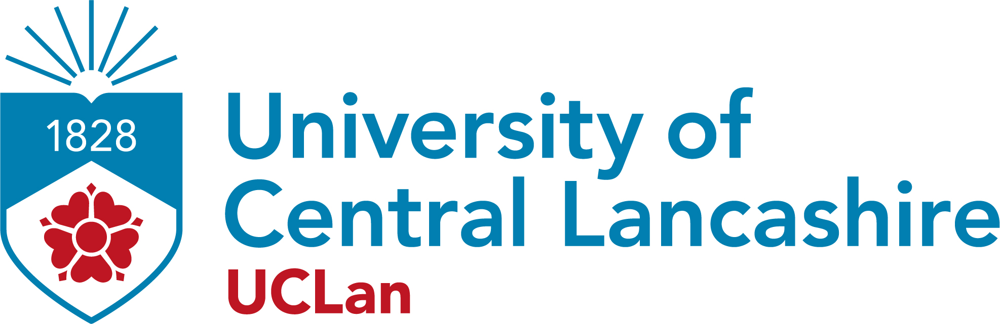

| 
School of Psychology and Computer Science |
UCLan Coursework Assessment Brief |
Academic Year 22-23 | |
| Module Title: Web Technologies | Module Code: CO1418 | Level 4 | |
Assignment 1: Responsive Web Application |
This assessment is worth 25% of the overall module mark | ||
Design Requirements
Remember this section outlines the resources needed to complete assignment 1.
Aim
After reading these requirements you should have a good understanding of what is required to complete the front-end web application associated with coursework 1. You are required to build a new web application for the Student’s Union Shop at UCLan. An example of what is expected in terms of the web application implementation can be found using this link.
Requirements
You might have heard the term form follows function. In terms of web development, the form of the web application focuses on the design based on user requirements (which are outlined below). The function follows the form, meaning you build the functionality of the application based on the users’ requirements (form).
Form (design)
The application should:
Contain the logo on all views
Provide a name for the application
Provide a navigational menu to access all views within the application
Follow the Universities brand guidelines for the primary colour’s palette (Fig.1)
Use the primary colour for the main branding of the application #BE1622, #007FB0 for hyperlinks and #34516C for secondary elements (e.g., sidebar and footer)
Use secondary colours (hex) appropriately throughout the rest of the application (Fig.1)
Apply a sans-serif typeface throughout the application
Function (implementation)
System requirements are often broken down into should and could sections. The 'shoulds' are the bare minimum that the system needs to operate. Whereas the 'coulds', are nice to have. These are features that will improve the system's usability, interactivity and accessibility.
The application should:
Contain four views; 1. Home (index.html), 2. Products (products.html), 3. Cart (cart.html), 4. Item (item.html)
The items page should only be accessed by clicking on an item in the products view. It should not appear in the main menu
Provide access to all products (t-shirts, hoodies, and jumpers) on the products.html page (use the resources.zip on Blackboard for image assets and a CSV file containing all items for the products) You do not have to parse the CSV you can hardcode the products into your web application
Provide video content in the form of an iFrame embedded on YouTube
Contain a README file outlining what web pages have been implemented and the operation of each page
Pass any HTML and CSS validation checks
The application could:
Present functionality to click on a product for more details
You will need to use the sessionStorage for this to temporarily store the item you’ve clicked on
Provide functionality to browse products by using anchor tags to jump to parts of the webpage
Enable users to add items to the shopping cart
You will need to use the localStorage to add a new item to the cart
Provide functionality to view the shopping cart with items added
On the cart view, you will need to retrieve the localStorage data and display on the screen. For the displaying, you will need to manipulate the DOM
Figure 1. HEX colour palette

Marking Criteria
Your work will be marked using the banded marking system that is in use across the university. The criteria below will be used as a guide, with academic judgement used to determine a grade.
- Design and evaluate appropriate user interfaces for front-end web applications - Wireframing with annotations overlaid
- Develop a front-end web application using modern development environments - Web application implementation (detailed breakdown below)
- Justify a choice of interaction methods and identify appropriate contexts of use for web applications - Questions in demo regarding responsive web design
- Demonstrate an awareness of current industry standards including those related to security, accessibility, and the design and development of web applications - Questions in demo regarding HTML5 API (localStorage and sessionStorage), web front-end frameworks etc...
Front-end Web Application Marking Breakdown
Criteria Explanations
Wireframe: A wireframe has been created to demonstrate your understanding of designing for the web
External CSS styling applied consistently: Ensures all styling and branding is applied on every view
HTML and CSS pass validation without errors: During the demo you are expected to have your code ready to pass through the validation checker
Contains all views (Home, Products, Cart and Item) with the brief met You should have three pages in your menu that link to all the main pages. The product items in the product page should link to the item page (this if the fourth page) even if you can not build the item page to respond to interaction from user input from the products page you should hardcode a product item on this page.
iFrame embedded to display YouTube video: The application uses embedded code to embed a YouTube video
Clean and commented code: Mark-up/Code is written cleanly and clear using comments to explain in detail what each element does
Method to navigate within view (to the three main pages): A basic menu that links the home page to all other pages in the application
Responsive design: Responsive design for mobile, tablet and desktop screens, the design and layout of the page should adapt to the screen real estate available. The footer should stick to the bottom of the page
Clear navigation: Main navigation is clear and adapts responsively, sub navigation used to navigate around the view (scroll to places and back to the top)
Best practice of CSS: Have classes and ids been used appropriately including the use of style semantic and non-semantic tags
Manipulating the DOM: Needed for when retrieving items from the local and session storage and adding to the cart table and session storage for passing to a new web view
HTML5 semantic elements: Include the use of HTML5 audio or video within the application. The application has included the use of HTML5 video or audio tags to enhance the richness of the application
Advanced responsive design: reformatting the menu when viewed on a smaller screen i.e., hamburger menu)
Basic shopping cart implementation: the styling, structure or some functionality has been made but it doesn't perform exactly how it should
HTML5 API integration: Local and session storage HTML5 APIs used in the application
Extended features to the shopping cart: This could include making the item include the name and price of the item, link to remove an item, process payment or empty the basket - but the operation of the shopping cart works as demonstrated
The adoption of version control with regular quality commits to demonstrating progress throughout the assessment: GitHub has been adopted and version control used throughout the project to a high standard
This document will be reviewed during the lecture to ensure all students have a solid understanding of the assessment expectations.